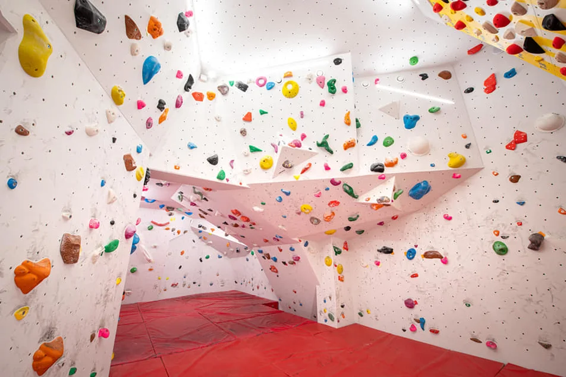

Kun-Székely Bence
Célom a hétvége
Mit tanultam eddig?
- A Petőfi Sándor Gimnáziumban érettségiztem.
- Python-t programozni magamtól tanultam még Gimnázium végén, azóta sok kisebb projektet írtam benne.
- 17 éves koromig versenyszerűen fociztam
Hobbijaim
Szeretek programozni játszani valamint nemrég kezdtem el sziklát mászni bel és kültéren is.


